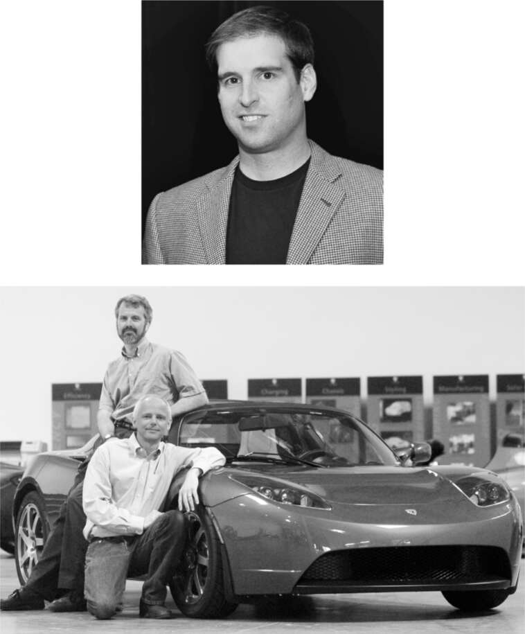

Jeffrey Brian Straubel - được gọi là JB - là một chàng trai Wisconsin được nuôi dưỡng bằng ngô và có vẻ ngoài gọn gàng với nụ cười má lúm đồng tiền, người mà khi còn là một cậu bé mười ba tuổi mê xe hơi, đã tân trang lại động cơ của một chiếc xe golf và yêu thích xe điện. Anh ấy cũng thích hóa học. Khi còn học trung học, anh ấy đã làm một thí nghiệm với hydro peroxit phát nổ trong tầng hầm của gia đình, để lại một vết sẹo vĩnh viễn trên khuôn mặt thiên thần của anh ấy.
Trong thời gian học về hệ thống năng lượng tại Stanford, ông đã thực tập với Harold Rosen, một doanh nhân nhiệt huyết và tinh quái đến từ New Orleans, người đã thiết kế vệ tinh địa tĩnh Syncom cho Hughes Aircraft. Rosen và anh trai Ben đang cố gắng chế tạo một chiếc xe hybrid với bánh đà tạo ra điện. Straubel đã thử một thứ đơn giản hơn. Ông đã chuyển đổi một chiếc Porsche cũ thành một chiếc xe chạy hoàn toàn bằng điện, sử dụng ắc quy chì-axit truyền thống. Nó có khả năng tăng tốc đáng kinh ngạc, nhưng quãng đường di chuyển chỉ giới hạn trong 30 dặm.
Sau khi công ty xe điện của Rosen thất bại, Straubel chuyển đến Los Angeles. Vào một đêm cuối hè năm 2003, ông đã tiếp đón sáu sinh viên mệt mỏi và lấm lem từ đội xe năng lượng mặt trời của Stanford, những người vừa hoàn thành cuộc đua từ Chicago đến Los Angeles trên một chiếc xe chạy bằng năng lượng mặt trời.
Họ đã trò chuyện gần như suốt đêm, và cuộc thảo luận xoay quanh pin lithium-ion, loại pin được sử dụng trong máy tính xách tay. Loại pin này chứa nhiều năng lượng và có thể được ghép nối với số lượng lớn. "Điều gì sẽ xảy ra nếu chúng ta có thể ghép nối một nghìn hoặc mười nghìn viên pin lại với nhau?" Straubel hỏi. Họ nhận ra rằng một chiếc xe nhẹ với nửa tấn pin có thể di chuyển khắp nước Mỹ. Khi bình minh ló dạng, họ ra sân sau với một số viên pin lithium-ion và dùng búa đập vỡ chúng để chúng phát nổ. Đó là một lễ kỷ niệm cho tương lai, và họ đã lập một hiệp ước. "Chúng ta phải làm điều này," Straubel nói.
Thật không may, không ai quan tâm đến việc tài trợ cho ông. Cho đến khi ông gặp Elon Musk.
Vào tháng 10 năm 2003, Straubel tham dự một hội thảo tại Stanford, nơi Musk, người đã thành lập SpaceX một năm trước đó, là diễn giả. Bài nói chuyện của ông nhấn mạnh sự cần thiết của các hoạt động không gian khởi nghiệp "dẫn dắt bởi tinh thần kinh doanh tự do." Điều đó đã thúc đẩy Straubel tiến lên phía trước vào cuối buổi và đề nghị sắp xếp một cuộc gặp với Harold Rosen. "Harold là một huyền thoại trong ngành công nghiệp vũ trụ, vì vậy tôi đã mời họ đến thăm nhà máy SpaceX," Musk nói.
Chuyến tham quan nhà máy diễn ra không suôn sẻ. Rosen, khi đó 77 tuổi, vui vẻ và tự tin khi chỉ ra những bộ phận trong thiết kế của Musk sẽ gặp sự cố. Khi họ đi ăn trưa tại một nhà hàng hải sản McCormick và Schmick gần đó, Musk đã đáp trả bằng cách chỉ trích ý tưởng mới nhất của Rosen là "ngu ngốc", đó là chế tạo máy bay không người lái chạy điện để cung cấp dịch vụ internet. "Elon rất nhanh chóng hình thành ý kiến," Straubel nói. Musk nhớ lại cuộc tranh luận trí tuệ một cách trìu mến. "Đó là một cuộc trò chuyện tuyệt vời bởi vì Harold và JB là những người rất thú vị, mặc dù ý tưởng đó thật ngớ ngẩn."
Háo hức duy trì cuộc trò chuyện, Straubel chuyển chủ đề sang ý tưởng chế tạo một chiếc xe điện sử dụng pin lithium-ion của mình. "Tôi đang tìm kiếm nguồn tài trợ và khá là mặt dày," ông nói. Musk bày tỏ sự ngạc nhiên khi Straubel giải thích về việc pin đã trở nên tốt như thế nào. "Tôi định nghiên cứu về lưu trữ năng lượng mật độ cao tại Stanford," Musk nói với ông. "Tôi đã cố gắng nghĩ xem điều gì sẽ có tác động lớn nhất đến thế giới, và lưu trữ năng lượng cùng với xe điện nằm trong danh sách ưu tiên của tôi." Mắt anh sáng lên khi xử lý các phép tính của Straubel. "Tính tôi vào," anh nói, cam kết cung cấp 10.000 đô la tiền tài trợ.
Straubel gợi ý Musk nên nói chuyện với Tom Gage và Alan Cocconi, hai người đồng sáng lập một công ty nhỏ tên là AC Propulsion, cũng đang theo đuổi ý tưởng tương tự. Họ đã chế tạo một nguyên mẫu bằng sợi thủy tinh, đặt tên là tzero, và Straubel đã gọi điện giục họ cho Musk lái thử. Sergey Brin, đồng sáng lập Google, cũng gợi ý họ nên trao đổi với Musk. Vậy nên vào tháng 1 năm 2004, Gage đã gửi email cho Musk. "Sergei Brin và JB Straubel đều cho rằng anh có thể muốn lái thử chiếc xe thể thao tzero của chúng tôi", ông viết. "Chúng tôi đã cho nó đua với một chiếc Viper vào thứ Hai tuần trước và nó đã thắng 4 trong 5 lần chạy nước rút trên đường đua ⅛ dặm. Tôi thua một lần vì chở theo một người quay phim nặng 136kg. Anh có thời gian để tôi mang nó đến không?"
"Được chứ", Musk trả lời. "Tôi rất muốn xem nó. Nhưng tôi không nghĩ nó có thể đánh bại chiếc McLaren của tôi (tại thời điểm này)."
"Hmm, một chiếc McLaren, nếu vậy thì thật tuyệt vời", Gage viết lại. "Tôi có thể mang nó đến vào ngày 4 tháng 2."
Musk đã bị tzero chinh phục hoàn toàn, mặc dù nó chỉ là một nguyên mẫu thô sơ không có cửa và mui. "Các anh phải biến thứ này thành một sản phẩm thực sự", ông nói với Gage. "Nó thực sự có thể thay đổi thế giới." Nhưng Gage muốn bắt đầu bằng việc chế tạo một chiếc xe rẻ hơn, vuông vức hơn và chậm hơn. Điều đó thật vô lý đối với Musk. Bất kỳ phiên bản ban đầu nào của một chiếc xe điện cũng sẽ rất tốn kém để chế tạo, ít nhất là 70.000 đô la mỗi chiếc. "Sẽ chẳng ai trả số tiền đó cho một thứ trông như đồ bỏ đi", ông lập luận. Cách để khởi động một công ty xe hơi là chế tạo một chiếc xe đắt tiền trước, sau đó mới chuyển sang mẫu xe đại trà. "Gage và Cocconi giống như những nhà phát minh lập dị", ông cười. "Lẽ thường tình không phải là điểm mạnh của họ."
Trong nhiều tuần, Musk đã thúc giục họ chế tạo một chiếc xe roadster sang trọng. "Mọi người đều nghĩ xe điện rất tệ, nhưng các anh có thể chứng minh điều ngược lại", ông nài nỉ. Nhưng Gage vẫn phản đối. "Được rồi, nếu các anh không muốn thương mại hóa tzero, tôi làm được chứ?", Musk hỏi.
Gage đồng ý. Ông cũng đưa ra một đề xuất định mệnh: Musk nên hợp tác với hai người đam mê xe hơi ở cuối phố, những người cũng có ý tưởng tương tự. Và đó là cách Musk gặp gỡ hai người đã có trải nghiệm tương tự với AC Propulsion và quyết định thành lập công ty xe hơi riêng, được đăng ký dưới cái tên Tesla Motors.
Năm 2001, khi Martin Eberhard, một doanh nhân cao gầy ở Thung lũng Silicon với khuôn mặt gầy gò và tính cách mạnh mẽ, đang vượt qua cuộc ly hôn tồi tệ, ông quyết định, như ông mô tả, "giống như mọi người đàn ông khác đang trải qua khủng hoảng tuổi trung niên, tôi sẽ mua cho mình một chiếc xe thể thao." Ông có đủ khả năng mua một chiếc xe đẹp vì đã thành lập và bán một công ty sản xuất tiền thân phổ biến đầu tiên của Kindle, Rocket eBook. Nhưng ông không muốn một chiếc xe chạy bằng xăng. "Biến đổi khí hậu đã trở nên hiện hữu với tôi", ông nói, "thêm vào đó, tôi cảm thấy chúng ta liên tục tham chiến ở Trung Đông vì nhu cầu dầu mỏ."
Là người có phương pháp, ông đã tạo một bảng tính để tính toán hiệu suất năng lượng của các loại xe khác nhau, bắt đầu từ nguồn nhiên liệu thô. Ông so sánh xăng, dầu diesel, khí tự nhiên, hydro và điện từ nhiều nguồn khác nhau. "Tôi đã tính toán chính xác từng bước, từ khi nhiên liệu được khai thác cho đến khi chúng cung cấp năng lượng cho xe."
Ông phát hiện ra rằng xe điện, ngay cả ở những nơi sử dụng điện được sản xuất từ than, vẫn là lựa chọn tốt nhất cho môi trường. Vì vậy, ông quyết định mua một chiếc. Nhưng California vừa bãi bỏ quy định bắt buộc các công ty ô tô phải cung cấp một số loại xe không phát thải, và General Motors đã ngừng sản xuất EV1. "Điều đó thực sự khiến tôi sốc", ông nói.
Sau khi đọc về nguyên mẫu tzero do Tom Gage và AC Propulsion chế tạo, ông đã nói với Gage rằng mình sẽ đầu tư 150.000 đô la vào công ty nếu họ chuyển từ pin chì-axit sang pin lithium-ion. Kết quả là Gage đã có một nguyên mẫu tzero vào tháng 9 năm 2003, có thể tăng tốc từ 0 đến 100 km/h trong 3,6 giây và có phạm vi hoạt động 480 km.
Eberhard đã cố gắng thuyết phục Gage và những người khác tại AC Propulsion bắt đầu sản xuất chiếc xe, hoặc ít nhất là chế tạo cho ông một chiếc. Nhưng họ đã không làm vậy. "Họ là những người thông minh, nhưng tôi sớm nhận ra rằng họ không có khả năng sản xuất ô tô," Eberhard nói. "Đó là lúc tôi quyết định phải tự mình thành lập một công ty ô tô." Ông đã ký một thỏa thuận để được cấp phép sử dụng động cơ điện và hệ thống truyền động từ AC Propulsion.
Ông đã mời Marc Tarpenning, một kỹ sư phần mềm từng là đối tác của ông tại Rocket eBook, cùng tham gia. Họ đã nghĩ ra một kế hoạch bắt đầu với một chiếc roadster hai chỗ ngồi, mui trần, cao cấp và sau đó sẽ sản xuất những chiếc xe dành cho thị trường đại chúng. "Tôi muốn tạo ra một chiếc roadster thể thao sẽ thay đổi hoàn toàn cách mọi người nghĩ về xe điện," Eberhard nói, "và sau đó sử dụng nó để xây dựng thương hiệu."
Nhưng thương hiệu đó nên là gì? Một đêm, trong khi hẹn hò ăn tối tại Disneyland, ông đã suy nghĩ miên man, có phần kém lãng mạn, về việc đặt tên cho công ty mới. Bởi vì chiếc xe sẽ sử dụng thứ được gọi là động cơ cảm ứng, ông đã nảy ra ý tưởng đặt tên nó theo tên người phát minh ra thiết bị đó, Nikola Tesla. Ngày hôm sau, ông đã uống cà phê với Tarpenning và hỏi ý kiến của anh ấy. Tarpenning liền lấy máy tính xách tay, lên mạng và đăng ký tên miền. Vào tháng 7 năm 2003, họ đã thành lập công ty.
Eberhard gặp phải một vấn đề. Ông có ý tưởng và tên gọi, nhưng không có nguồn vốn. Sau đó, vào tháng 3 năm 2004, ông nhận được một cuộc gọi từ Tom Gage. Cả hai đã thỏa thuận rằng họ sẽ không cạnh tranh để giành nhà đầu tư của nhau. Khi rõ ràng rằng Musk sẽ không đầu tư vào AC Propulsion, Gage đã giới thiệu ông với Eberhard. "Tôi từ bỏ Elon rồi," anh nói. "Anh nên gọi cho cậu ấy."
Eberhard và Tarpenning đã gặp Musk trước đó, khi họ đến nghe ông phát biểu tại một cuộc họp của Hiệp hội Sao Hỏa vào năm 2001. "Sau đó, tôi đã níu ông ấy lại chỉ để chào hỏi, giống như một người hâm mộ," Eberhard nhớ lại.
Ông đã đề cập đến cuộc gặp gỡ đó trong một email gửi cho Musk để yêu cầu một cuộc gặp. "Chúng tôi rất muốn nói chuyện với anh về Tesla Motors, đặc biệt nếu anh có hứng thú đầu tư," ông viết. "Tôi tin rằng anh đã lái chiếc xe tzero của AC Propulsion. Nếu vậy, anh đã biết rằng một chiếc xe điện hiệu suất cao có thể được chế tạo. Chúng tôi muốn thuyết phục anh rằng chúng tôi có thể làm điều đó một cách có lãi."
Tối hôm đó Musk trả lời, "Được thôi."
Eberhard đã đi từ Palo Alto xuống Los Angeles vào tuần đó, cùng với một đồng nghiệp, Ian Wright. Cuộc họp, tại phòng làm việc của Musk tại SpaceX, dự kiến kéo dài nửa giờ, nhưng Musk liên tục đặt câu hỏi cho họ trong khi thỉnh thoảng hét lên với trợ lý của mình để hủy cuộc họp tiếp theo. Trong hai giờ, họ đã chia sẻ tầm nhìn của mình về một chiếc xe điện siêu nạp, thảo luận chi tiết về mọi thứ, từ hệ thống truyền động và động cơ đến kế hoạch kinh doanh. Cuối cuộc họp, Musk nói rằng ông sẽ đầu tư. Khi họ ra khỏi tòa nhà SpaceX, Eberhard và Wright đã đập tay ăn mừng. Sau một cuộc họp tiếp theo có sự tham gia của Tarpenning, họ đã đồng ý rằng Musk sẽ dẫn đầu vòng tài trợ ban đầu với khoản đầu tư 6,4 triệu đô la và trở thành chủ tịch hội đồng quản trị.
Điều gây ấn tượng với Tarpenning là Musk tập trung vào tầm quan trọng của sứ mệnh hơn là tiềm năng kinh doanh: “Anh ấy rõ ràng đã đi đến kết luận rằng để có một tương lai bền vững, chúng ta phải điện khí hóa ô tô.” Musk có một vài yêu cầu. Đầu tiên là thủ tục giấy tờ phải được hoàn tất nhanh chóng, vì vợ anh, Justine, đang mang thai đôi và đã lên lịch mổ lấy thai một tuần sau đó. Ông cũng đề nghị Eberhard liên hệ với JB Straubel. Vì đã đầu tư vào cả doanh nghiệp của Straubel và Eberhard, Musk nghĩ rằng họ nên hợp tác cùng nhau.
Straubel, người chưa từng nghe nói về Eberhard hay công ty Tesla non trẻ của ông, đã đạp xe đến và tỏ ra hoài nghi. Nhưng Musk đã gọi điện và thúc giục anh tham gia. “Nào, anh phải làm việc này,” Musk nói với anh. “Nó sẽ rất phù hợp.”
Các mảnh ghép vì thế đã kết hợp lại với nhau để tạo nên công ty ô tô giá trị và mang tính cách mạng nhất thế giới: Eberhard làm CEO, Tarpenning làm chủ tịch, Straubel làm giám đốc công nghệ, Wright làm giám đốc điều hành và Musk làm chủ tịch hội đồng quản trị kiêm nhà tài trợ chính. Nhiều năm sau, sau nhiều tranh chấp gay gắt và một vụ kiện, họ đã đồng ý rằng cả năm người sẽ được gọi là đồng sáng lập.

/JB Straubel, với vết sẹo của anh ấy; Martin Eberhard và Marc Tarpenning.